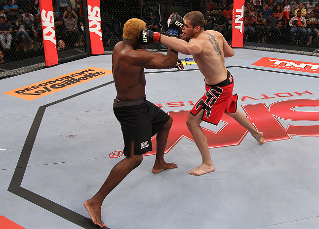
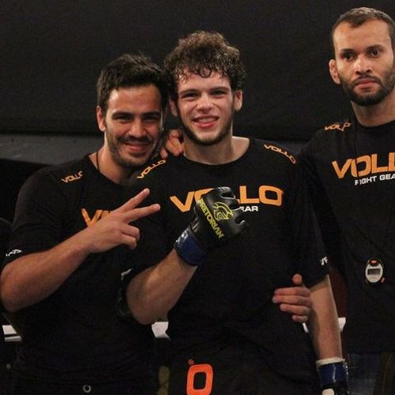
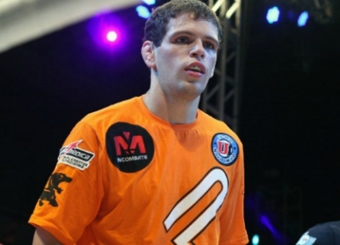

Inicio
Bienvenidos al Gimnasio Green Brothers MMA, el centro de entrenamiento
de artes marciales mixtas de élite ubicado en el corazón de Reus,
creado en 2023 por el luchador de MMA, Roberto Amorim. En Green
Brothers MMA, nos especializamos en proporcionar entrenamiento de alta
calidad en un ambiente profesional y motivador. Fundado por Roberto
Amorim, cuya carrera en MMA está marcada por su impresionante récord y
habilidad para finalizar peleas por nocaut, nuestro gimnasio refleja
su pasión y dedicación a este deporte.
Filosofía del Entrenamiento
En Green Brothers MMA, creemos en el desarrollo integral de nuestros
atletas. Bajo la dirección de Roberto Amorim, adoptamos una filosofía
que combina disciplina, respeto y una ética de trabajo riguroso.
Nuestro objetivo es ayudarte a alcanzar tu máximo potencial, ya sea
que busques competir profesionalmente o simplemente mejorar tu
condición física y habilidades de defensa personal.
Coaches
Roberto "Corvo" Amorim - Headcoach
Roberto Amorim, conocido como "Corvo", es un luchador ex-UFC brasileño
de MMA. A lo largo de su carrera ha tenido un notable desempeño,
acumulando varias victorias por nocaut. Amorim tiene un récord de
7-3-0 con 1 no contest, y seis de sus siete victorias han sido por
nocaut, lo que destaca su capacidad de finalización en la jaula.



Amorim ha competido en diversas organizaciones y eventos de MMA,
incluyendo TUF (THE ULTIMATE FIGHTER), Shooto Brazil, Jackson’s MMA
Series. Uno de los momentos destacados de su carrera incluye una pelea
principal contra Harvey Park en el evento Jackson’s MMA Series XXII,
donde a pesar de un desempeño impresionante a lo largo de su carrera,
buscaba recuperarse de una derrota por decisión dividida contra Joao
Paulo Almeida Alves en diciembre de 2015. Su apodo, "Corvo", lo
identifica en el ámbito de las artes marciales mixtas y resalta su
estilo agresivo y efectivo dentro del ring.
Actividades
-
Entrenamiento de MMA: Desde principiantes hasta
luchadores avanzados, nuestros programas están diseñados para
mejorar tus habilidades técnicas, fuerza y resistencia.
-
Clases de Boxeo y Kickboxing: Mejora tu striking
con entrenadores especializados en técnicas de golpeo.
-
Jiu-Jitsu Brasileño: Aprende las artes de sumisión
y el control del suelo con instructores expertos.
-
Entrenamiento de Fuerza y Acondicionamiento:
Programas personalizados para mejorar tu condición física y
prepararte para la competición.
-
Sesiones de Sparring: Practica tus habilidades en
un entorno seguro y controlado bajo la supervisión de entrenadores
profesionales.
Únete a Nosotros
Forma parte de nuestra familia de luchadores y entusiastas de las
artes marciales mixtas. No importa tu nivel de experiencia, en Green
Brothers MMA encontrarás un lugar donde crecer y mejorar
continuamente. Para más información o para inscribirte, visítanos en
www.greenbrothersmma.com o síguenos en nuestras redes sociales para
estar al tanto de nuestras novedades y eventos especiales.
Nos encontrarás en c/ Dr. Vilaseca, 13B (43202).
¡Te esperamos para comenzar juntos este emocionante viaje en el mundo
de las artes marciales mixtas!